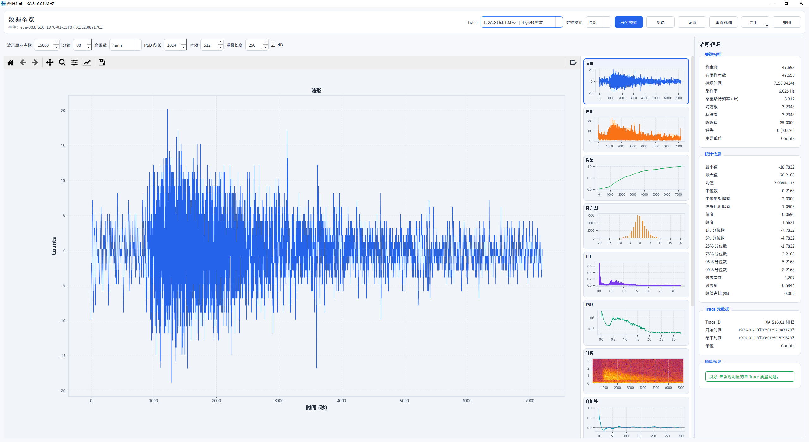
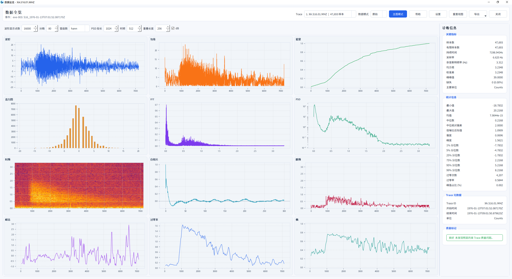

数据全览
数据全览是处理之前的第一道检查。它把一条 trace 的质量指标集中在一屏里， 让你在动手滤波、去响应之前就知道这份数据能不能用。
打开方式
先在事件列表里选中事件，然后 数据 › 数据全览。
必须先选中事件
没有选中时，菜单项会弹出一个提示框而不是打开面板——这是设计如此，不是故障。
界面构成


打开后要等几秒
面板是先把波形画出来，再在后台依次计算包络、FFT、PSD、时频、自相关这些小图。
刚打开时右侧是空的或只出来一两张，等 3–5 秒才会填满——
这不是卡死，也不要点「重置视图」打断它。点数越多、PSD 段长越大，等得越久。
| 区域 | 位置 | 内容 |
|---|---|---|
| 顶部工具条 | 第一行 | 切换 Trace、点数、数据模式（原始/其他）、视图模式（等分模式 / 全部）、帮助、设置、重置视图、导出、关闭 |
| 波形参数 | 第二行 | 波形显示点数、分箱数、窗函数、PSD 段长、时频、重叠长度、dB 开关 |
| 波形图 | 左侧主区 | 时域波形。红色段表示非有限值（NaN / 缺失 / -1 哨兵） |
| 辅助图 | 右侧 | 默认竖排显示波形、包络、累积、直方图、FFT、PSD、时频、自相关；切「全部」后平铺十二张 |
| 诊断信息 | 最右 | 关键指标与统计信息，见下 |
关键指标
这一栏是判断数据可用性的核心：
| 指标 | 含义 | 异常时怎么办 |
|---|---|---|
| 样本数 | trace 的总采样点数 | —— |
| 有限样本数 | 排除缺失后的有效点数 | 明显小于样本数说明有缺口 |
| 持续时间 | 时间窗长度（秒） | 与请求的时间窗核对 |
| 采样率 | 每秒采样点数，月震数据为 6.625 Hz | 与台网标称值不符要查数据源 |
| 奈奎斯特频率 | 采样率的一半，可分析的最高频率 | 滤波上限不能超过它 |
| 均方根 / 标准差 | 能量水平 | 用于判断是否饱和或过小 |
| 缺失 | 缺失点数与占比，如 300 (5.00%) |
占比高时先做缺样插值 |
统计信息
最小值、最大值、均值、中位数、中位绝对偏差、信噪比近似值、偏度、峰度， 以及 1% / 5% / 25% / 75% / 95% / 99% 分位数、过零次数、过零率、峰值占比。
怎么用这一栏
- 偏度 / 峰度：远大于 0 说明分布有长尾，通常意味着存在尖峰异常， 处理前先做去脉冲。
- 分位数 vs 最值：最值远大于 99% 分位数，同样说明有孤立尖峰。
- 过零率：突然变小可能是信号饱和或存在直流偏置。
图上那条红线
波形中被打上红色的区段是非有限值——它可能来自：
- ObsPy 裁剪/合并后留下的掩码（真实时间缺口）；
- 整型 trace 合并缺口时写入的
dtype最小值（int32为-2147483648）； - 阿波罗数据的
-1缺失标记（仅XA台网）； - 显式的
NaN/inf。
这四类都会被识别为缺失，后续的缺样插值可以统一处理。地球台网里的 -1 是正常负样点，
不会被误判——判断依据是台网代码。
导出与重置
- 导出：把当前视图导出为图片，用于报告或论文插图；
- 重置视图：图表被缩放到看不清时，一键回到默认范围；
- 设置：调整该面板自己的显示参数，与全局设置互不影响。